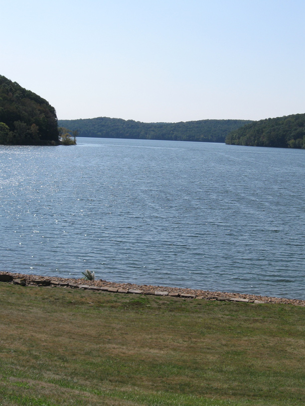
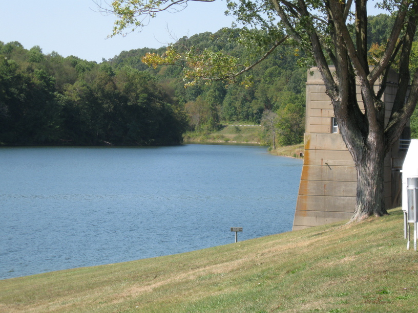

24 Sep 08, Zanesville, OH
Today was my hardest day of cycling yet. The hills of eastern Ohio were killer, and I didn't have a low enough gear to conquer them comfortably.
There was some other excitement today—I started the day by getting pulled over by the highway patrol for riding on a section of Rt 22 that is closed to bikes (or attempting to—I had barely made it down the on ramp when he stopped me). He was nice, and helpful, and pointed out that 22A paralleled 22 until I could get back on the main route (when it went from 65 to 55). While this meant more hills, I did avoid a lot of traffic. (Although I'm not certain that a 45 mph two-lane road with little or no shoulders is safer than a 65 mph divided 4-lane highway with huge shoulders.)
After the worst of the hills were over, I stopped for a late lunch in Cambridge, OH. As I headed through town afterwards I saw another loaded cyclist going east. I crossed the street to chat with him—his name was Zach and he was in the final leg of a cross-country tour that had started on July 17th in Portland. He was returning to his home in McLean VA via Rt 40 and the C&O. He was traveling impressively light—just two rear panniers with a bag on top (counting his tent & skateboard, he informed me). We chatted for awhile, admired each other's bikes (at least, I thought his geared rear hub was really cool, and he commented that he likes the LHT), and went on our ways. He's the first cross-country tourist I've bet on this trip, and the second soloist, I think.
Only other interesting thing today is that I'm camping in a cemetery. It's something that I know cycle tourists do, but I hadn't tried yet. We'll see how it goes. I've also got my tent on the ground for the first time*, and while it's cramped, I at least don't have to deal with all my stuff sliding under me.
Anyway, I've got only 65 miles to C-bus (I covered ~80mi today, despite those hills!), and I'm going to try for a very early start so that I can avoid riding thru downtown in rush hour traffic. So it's bedtime for me.
* My tent is a hammock tent, so it's usually suspended between trees, or whatever I can find to tie it to.

